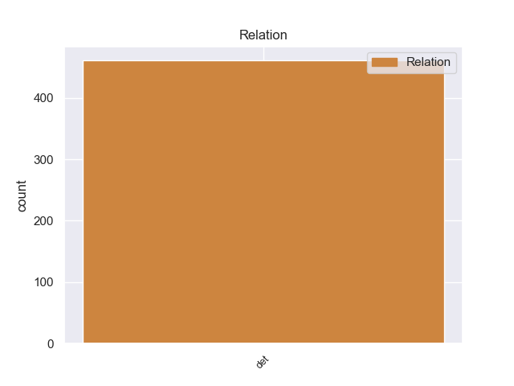
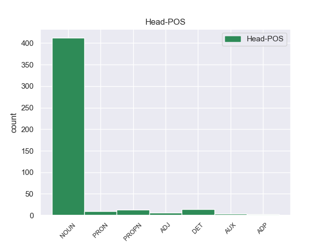
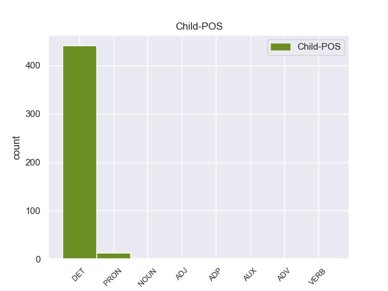

Distribution of features within this leaf



Agreement Rules sorted by frequency.
- When the dependent token is the determiner(det) of the head token, and the head token is NOUN
1 Αυτό _ _ _ _ 0 _ _ _
2 μπορεί _ _ _ _ 0 _ _ _
3 να _ _ _ _ 0 _ _ _
4 μην _ _ _ _ 0 _ _ _
5 οδηγήσει _ _ _ _ 0 _ _ _
6 σ _ _ _ _ 0 _ _ _
7 τη _ _ _ _ 0 _ _ _
8 λήξη _ _ _ _ 0 _ _ _
9 του _ _ _ _ 0 _ _ _
10 εν _ _ _ _ 0 _ _ _
11 λόγω _ _ _ _ 0 _ _ _
12 ζητήματος ζητήματοςς NOUN _ Case=Acc|Gender=Fem|Number=Sing 0 _ _ _
13 αλλά _ _ _ _ 0 _ _ _
14 , _ _ _ _ 0 _ _ _
15 σ _ _ _ _ 0 _ _ _
16 τη _ _ _ _ 0 _ _ _
17 μορφή _ _ _ _ 0 _ _ _
18 υπό _ _ _ _ 0 _ _ _
19 την ο DET _ Case=Acc|Gender=Fem|Number=Sing 12 det _ _
20 οποία _ _ _ _ 0 _ _ _
21 την _ _ _ _ 0 _ _ _
22 λάβαμε _ _ _ _ 0 _ _ _
23 , _ _ _ _ 0 _ _ _
24 αυτή _ _ _ _ 0 _ _ _
25 η _ _ _ _ 0 _ _ _
26 αίτηση _ _ _ _ 0 _ _ _
27 άρσης _ _ _ _ 0 _ _ _
28 της _ _ _ _ 0 _ _ _
29 ασυλίας _ _ _ _ 0 _ _ _
30 ήταν _ _ _ _ 0 _ _ _
31 , _ _ _ _ 0 _ _ _
32 κατά _ _ _ _ 0 _ _ _
33 την _ _ _ _ 0 _ _ _
34 άποψη _ _ _ _ 0 _ _ _
35 της _ _ _ _ 0 _ _ _
36 Επιτροπής _ _ _ _ 0 _ _ _
37 Νομικών _ _ _ _ 0 _ _ _
38 Θεμάτων _ _ _ _ 0 _ _ _
39 , _ _ _ _ 0 _ _ _
40 απαράδεκτη _ _ _ _ 0 _ _ _
41 , _ _ _ _ 0 _ _ _
42 άποψη _ _ _ _ 0 _ _ _
43 την _ _ _ _ 0 _ _ _
44 οποία _ _ _ _ 0 _ _ _
45 συνιστώ _ _ _ _ 0 _ _ _
46 σ _ _ _ _ 0 _ _ _
47 το _ _ _ _ 0 _ _ _
48 Σώμα _ _ _ _ 0 _ _ _
49 να _ _ _ _ 0 _ _ _
50 υιοθετήσει _ _ _ _ 0 _ _ _
51 . _ _ _ _ 0 _ _ _
1 Το _ _ _ _ 0 _ _ _
2 ηλιοβασίλεμα ηλιοβασίλεμα DET _ Case=Acc|Gender=Fem|Number=Sing 0 _ _ _
3 από _ _ _ _ 0 _ _ _
4 την ο DET _ Case=Acc|Gender=Fem|Number=Sing 2 det _ _
5 παραλία _ _ _ _ 0 _ _ _
6 είναι _ _ _ _ 0 _ _ _
7 μαγευτικό _ _ _ _ 0 _ _ _
8 . _ _ _ _ 0 _ _ _
1 Τους _ _ _ _ 0 _ _ _
2 έγραφε _ _ _ _ 0 _ _ _
3 ότι _ _ _ _ 0 _ _ _
4 οι _ _ _ _ 0 _ _ _
5 επαναστάτες _ _ _ _ 0 _ _ _
6 θα _ _ _ _ 0 _ _ _
7 κρατούσαν _ _ _ _ 0 _ _ _
8 τις _ _ _ _ 0 _ _ _
9 θέσεις _ _ _ _ 0 _ _ _
10 τους _ _ _ _ 0 _ _ _
11 μέχρι _ _ _ _ 0 _ _ _
12 να _ _ _ _ 0 _ _ _
13 σκοτωθεί _ _ _ _ 0 _ _ _
14 κι _ _ _ _ 0 _ _ _
15 ο _ _ _ _ 0 _ _ _
16 τελευταίος _ _ _ _ 0 _ _ _
17 από _ _ _ _ 0 _ _ _
18 τις _ _ _ _ 0 _ _ _
19 οβίδες _ _ _ _ 0 _ _ _
20 των _ _ _ _ 0 _ _ _
21 ευρωπαϊκών _ _ _ _ 0 _ _ _
22 πολεμικών _ _ _ _ 0 _ _ _
23 προκειμένου _ _ _ _ 0 _ _ _
24 να _ _ _ _ 0 _ _ _
25 μην _ _ _ _ 0 _ _ _
26 αφήσουν _ _ _ _ 0 _ _ _
27 τους ο DET DET Case=Acc|Definite=Def|Gender=Masc|Number=Plur|PronType=Art 28 det _ _
28 Τούρκους Τούρκος PROPN PROPN Case=Acc|Gender=Masc|Number=Plur 0 _ _ _
29 να _ _ _ _ 0 _ _ _
30 πάρουν _ _ _ _ 0 _ _ _
31 το _ _ _ _ 0 _ _ _
32 Ακρωτήρι _ _ _ _ 0 _ _ _
33 . _ _ _ _ 0 _ _ _
1 Κατά _ _ _ _ 0 _ _ _
2 την _ _ _ _ 0 _ _ _
3 τουρκοκρατία _ _ _ _ 0 _ _ _
4 ονομάστηκε _ _ _ _ 0 _ _ _
5 Μούρτος _ _ _ _ 0 _ _ _
6 από _ _ _ _ 0 _ _ _
7 το _ _ _ _ 0 _ _ _
8 όνομα _ _ _ _ 0 _ _ _
9 του _ _ _ _ 0 _ _ _
10 προκρίτου _ _ _ _ 0 _ _ _
11 , _ _ _ _ 0 _ _ _
12 ο ο DET DET Case=Nom|Definite=Def|Gender=Masc|Number=Sing|PronType=Art 13 det _ _
13 οποίος οποίος PRON PRON Case=Nom|Gender=Masc|Number=Sing|Person=3|PronType=Rel 0 _ _ _
14 λαφυραγωγούσε _ _ _ _ 0 _ _ _
15 τα _ _ _ _ 0 _ _ _
16 διερχόμενα _ _ _ _ 0 _ _ _
17 εμπορικά _ _ _ _ 0 _ _ _
18 πλοία _ _ _ _ 0 _ _ _
19 . _ _ _ _ 0 _ _ _
1 Το _ _ _ _ 0 _ _ _
2 Θαλάσσιο _ _ _ _ 0 _ _ _
3 Πάρκο _ _ _ _ 0 _ _ _
4 Αλοννήσου _ _ _ _ 0 _ _ _
5 είναι _ _ _ _ 0 _ _ _
6 το _ _ _ _ 0 _ _ _
7 πρώτο _ _ _ _ 0 _ _ _
8 σ _ _ _ _ 0 _ _ _
9 την _ _ _ _ 0 _ _ _
10 Ελλάδα _ _ _ _ 0 _ _ _
11 και _ _ _ _ 0 _ _ _
12 το _ _ _ _ 0 _ _ _
13 μεγαλύτερο _ _ _ _ 0 _ _ _
14 σ _ _ _ _ 0 _ _ _
15 την _ _ _ _ 0 _ _ _
16 Ευρώπη _ _ _ _ 0 _ _ _
17 και _ _ _ _ 0 _ _ _
18 τη _ _ _ _ 0 _ _ _
19 Μεσόγειο _ _ _ _ 0 _ _ _
20 , _ _ _ _ 0 _ _ _
21 το _ _ _ _ 0 _ _ _
22 οποίο _ _ _ _ 0 _ _ _
23 φιλοξενεί _ _ _ _ 0 _ _ _
24 τη _ _ _ _ 0 _ _ _
25 μεσογειακή _ _ _ _ 0 _ _ _
26 φώκια _ _ _ _ 0 _ _ _
27 monachus _ _ _ _ 0 _ _ _
28 - _ _ _ _ 0 _ _ _
29 monachus _ _ _ _ 0 _ _ _
30 ένα _ _ _ _ 0 _ _ _
31 είδος _ _ _ _ 0 _ _ _
32 που _ _ _ _ 0 _ _ _
33 εκλείπει _ _ _ _ 0 _ _ _
34 από _ _ _ _ 0 _ _ _
35 τη _ _ _ _ 0 _ _ _
36 Δυτική _ _ _ _ 0 _ _ _
37 Μεσόγειο _ _ _ _ 0 _ _ _
38 ( _ _ _ _ 0 _ _ _
39 εδώ _ _ _ _ 0 _ _ _
40 ο _ _ _ _ 0 _ _ _
41 πληθυσμός _ _ _ _ 0 _ _ _
42 φτάνει _ _ _ _ 0 _ _ _
43 τις _ _ _ _ 0 _ _ _
44 250 _ _ _ _ 0 _ _ _
45 ) _ _ _ _ 0 _ _ _
46 και _ _ _ _ 0 _ _ _
47 άλλα άλλα ADJ _ Case=Acc|Definite=Def|Gender=Fem|Number=Sing|PronType=Art 75 det _ _
48 σπάνια _ _ _ _ 0 _ _ _
49 είδη _ _ _ _ 0 _ _ _
50 χλωρίδας _ _ _ _ 0 _ _ _
51 και _ _ _ _ 0 _ _ _
52 πανίδας _ _ _ _ 0 _ _ _
53 όπως _ _ _ _ 0 _ _ _
54 η _ _ _ _ 0 _ _ _
55 αγριελιά _ _ _ _ 0 _ _ _
56 , _ _ _ _ 0 _ _ _
57 το _ _ _ _ 0 _ _ _
58 θαμνοκυπάρισσο _ _ _ _ 0 _ _ _
59 , _ _ _ _ 0 _ _ _
60 τα _ _ _ _ 0 _ _ _
61 ποσειδώνια _ _ _ _ 0 _ _ _
62 φύκη _ _ _ _ 0 _ _ _
63 αλλά _ _ _ _ 0 _ _ _
64 και _ _ _ _ 0 _ _ _
65 το _ _ _ _ 0 _ _ _
66 αγριοκάτσικο _ _ _ _ 0 _ _ _
67 των _ _ _ _ 0 _ _ _
68 Γιούρων _ _ _ _ 0 _ _ _
69 , _ _ _ _ 0 _ _ _
70 το _ _ _ _ 0 _ _ _
71 γεράκι _ _ _ _ 0 _ _ _
72 μαυροπετρίτης _ _ _ _ 0 _ _ _
73 , _ _ _ _ 0 _ _ _
74 τον _ _ _ _ 0 _ _ _
75 αιγόγλαρο Αιγόγλαρο ADJ _ Case=Acc|Gender=Fem|Number=Sing 0 _ _ _
76 . _ _ _ _ 0 _ _ _
1 Ενώ _ _ _ _ 0 _ _ _
2 επρόκειτο _ _ _ _ 0 _ _ _
3 να _ _ _ _ 0 _ _ _
4 γυρίσει _ _ _ _ 0 _ _ _
5 σ _ _ _ _ 0 _ _ _
6 την ο DET _ Case=Acc|Gender=Fem|Number=Sing 7 det _ _
7 Ελλάδα ελλάδας AUX _ Case=Acc|Definite=Def|Gender=Fem|Number=Sing|PronType=Art 0 _ _ _
8 , _ _ _ _ 0 _ _ _
9 έγινε _ _ _ _ 0 _ _ _
10 δολοφονική _ _ _ _ 0 _ _ _
11 απόπειρα _ _ _ _ 0 _ _ _
12 εναντίον _ _ _ _ 0 _ _ _
13 του _ _ _ _ 0 _ _ _
14 σ _ _ _ _ 0 _ _ _
15 τον _ _ _ _ 0 _ _ _
16 σιδηροδρομικό _ _ _ _ 0 _ _ _
17 σταθμό _ _ _ _ 0 _ _ _
18 της _ _ _ _ 0 _ _ _
19 Λυόν _ _ _ _ 0 _ _ _
20 , _ _ _ _ 0 _ _ _
21 σ _ _ _ _ 0 _ _ _
22 το _ _ _ _ 0 _ _ _
23 Παρίσι _ _ _ _ 0 _ _ _
24 από _ _ _ _ 0 _ _ _
25 δύο _ _ _ _ 0 _ _ _
26 απότακτους _ _ _ _ 0 _ _ _
27 Έλληνες _ _ _ _ 0 _ _ _
28 αξιωματικούς _ _ _ _ 0 _ _ _
29 . _ _ _ _ 0 _ _ _
1 Το _ _ _ _ 0 _ _ _
2 λατινικό _ _ _ _ 0 _ _ _
3 όνομά όνομάς ADP _ Case=Acc|Gender=Fem|Number=Sing 0 _ _ _
4 της ο DET _ Case=Gen|Definite=Def|Gender=Fem|Number=Sing|PronType=Art 3 det _ _
5 , _ _ _ _ 0 _ _ _
6 Corfu _ _ _ _ 0 _ _ _
7 ( _ _ _ _ 0 _ _ _
8 Κορφού _ _ _ _ 0 _ _ _
9 ) _ _ _ _ 0 _ _ _
10 οφείλεται _ _ _ _ 0 _ _ _
11 σ _ _ _ _ 0 _ _ _
12 την _ _ _ _ 0 _ _ _
13 παραφθορά _ _ _ _ 0 _ _ _
14 του _ _ _ _ 0 _ _ _
15 βυζαντινού _ _ _ _ 0 _ _ _
16 τοπωνυμίου _ _ _ _ 0 _ _ _
17 της _ _ _ _ 0 _ _ _
18 , _ _ _ _ 0 _ _ _
19 Κορυφώ _ _ _ _ 0 _ _ _
20 , _ _ _ _ 0 _ _ _
21 δηλαδή _ _ _ _ 0 _ _ _
22 " _ _ _ _ 0 _ _ _
23 πόλεις _ _ _ _ 0 _ _ _
24 των _ _ _ _ 0 _ _ _
25 Κορυφών _ _ _ _ 0 _ _ _
26 " _ _ _ _ 0 _ _ _
27 που _ _ _ _ 0 _ _ _
28 προήλθε _ _ _ _ 0 _ _ _
29 από _ _ _ _ 0 _ _ _
30 τις _ _ _ _ 0 _ _ _
31 δύο _ _ _ _ 0 _ _ _
32 ακροπόλεις _ _ _ _ 0 _ _ _
33 που _ _ _ _ 0 _ _ _
34 υπάρχουν _ _ _ _ 0 _ _ _
35 σ _ _ _ _ 0 _ _ _
36 τη _ _ _ _ 0 _ _ _
37 χώρα _ _ _ _ 0 _ _ _
38 . _ _ _ _ 0 _ _ _
No disagree examples found.